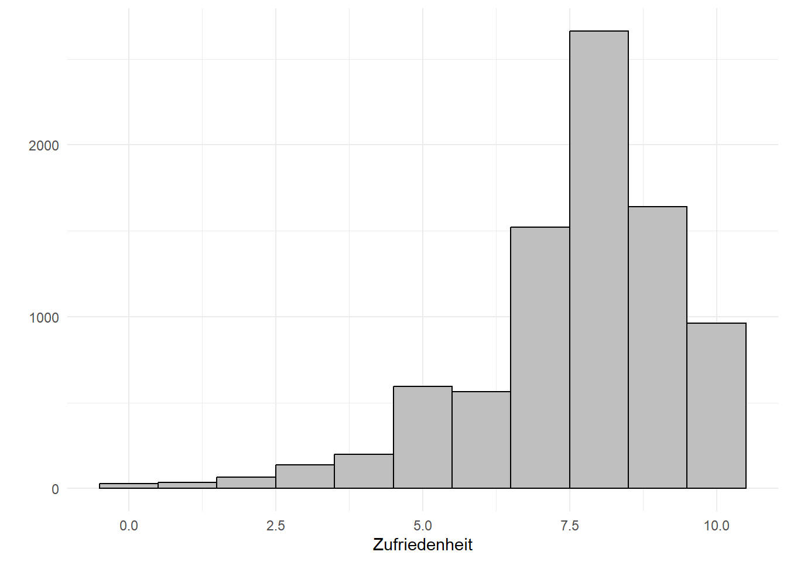

Lade nötiges Paket: pacmanWarning: Paket 'pacman' wurde unter R Version 4.3.1 erstelltBestimmen von Unterschieden in der zentralen Tendenz
Die Varianzanalyse weitet den Grundgedanken des t-Tests aus, indem sie den simultanen Vergleich von Gruppenmittelwerten über mehr als zwei Gruppen erlaubt. Die einfaktorielle Varianzanalyse definiert die Gruppen dabei anhand eines Faktors (einer unabhängigen Variable), die mehrfaktorielle Varianzanalyse erlaubt mehrere unabhängige kategoriale Variablen im Modell, ist aber nicht mit der multivariaten Varianzanalyse (MANOVA) zu verwechseln, die auch mehrere metrische abhängige Variablen gleichzeitig zulässt. Wenn die Gruppierungsvariable (also die unabhängige Faktor-Variable) mehr als zwei Gruppen unterscheidet, müssen nach der Anova Post-Hoc Tests durchgeführt werden. Denn sollte die Varianzanalyse insgesamt signifikante Werte liefern, wurde zwar festgestellt, dass es überzufällige Unterschiede zwischen den durch die Faktorstufen definierten Gruppen gibt, bei drei und mehr Faktorstufen bleibt aber noch unklar, auf welchen Gruppenunterschieden dieses Ergebnis beruht. Post hoc-Tests liefern spezifischere Informationen dazu, welche Gruppenmittelwerte signifikant voneinander abweichen.
In R ist es zwingend notwendig, neben dem Programm als solches auch die Daten zu laden. Nachfolgend findet sich der load-Befehl. Dieser lädt die R-Daten. Dafür ist es wichtig, das diese im selben Ordner wie dieses Skript gespeichert sind. Zudem müssen wir die Pakete laden. Hier nutzen wir den Paketmanagaer pacman. Diese muss einmal installiert und geladen werden und anschließend können mit dem Befehl p_load alle benötigten Pakete gleichzeitig installiert und geladen werden.
Lade nötiges Paket: pacmanWarning: Paket 'pacman' wurde unter R Version 4.3.1 erstelltDie Varianzanalyse ist ein statistisches Verfahren, dass bestimmte Voraussetzungen bezüglich der abhängigen und unabhängigen Variablen voraussetzt. Dies sind im Überblick:
Die meisten Voraussetzungen, die für die Durchführung und Interpretation einer Varianzanalyse erfüllt sein müssen, lassen sich bereits im Vorfeld der eigentlichen Analyse überprüfen. So kann das Messniveau unmitttelbar festgestellt werden. Es gilt für die abhängige (y-)Variable stets, dass sie intervallskaliert sein muss, in R also als ein Vektor vorliegen muss. Die Faktoren bzw. unabhängige(n) (x-) Variable(n) hingegen müssen zwingend nominalskaliert sein und in R demnach als Faktoren vorliegen.
Eine weitere wichtige, leicht vorab zu prüfende Bedingung, die für eine Varianzanalyse erfüllt sein muss, ist die Normalverteilung der abhängigen Variable. Diese können wir graphisch überprüfen:
In R nutzen wir das Paket ggplot2 von Wickham et al. um ein Histogramm auszugeben. Zunächst müssen wir hier das Paket ggplot2 mit dem Befehl ggplot() aufrufen. Anschließend spezifizieren wir innerhalb der Klammer unseren Datensatz (hier Varianzanalyse) und unter aes unsere Variable (hier Angst). Mit einem Plus-Zeichen legen wir die nächste Ebene fest und geben hier mit geom_histogram an, dass wir ein Histogramm wünschen. Die Spezifizierungen innerhalb der Klammer geben an, dass dieses auf den Zahlen unseres Datensatzes beruhen soll (aes(y = ..count..)), wir die Außenumrandung schwarz color = black und die Füllfarbe grau wünschen (fill = grey). Diese Spezifikationen sind optional, sorgen jedoch für ein schöneres Aussehen unserer Grafik. Zuletzt legen wir innerhalb der Klammer die Breite unserer Säulen fest. Mit binwidth = 1 verweisen wir hier auf eine Breite der Balken 1. Nun haben wir ein vollständiges Histogramm. Wir können jedoch für ein verschönertes Aussehen unseres Graphen mit labs zusätzlich die Achsen beschriften.
#Histogramm ausgeben
ggplot(daten, aes(happy)) +
geom_histogram(aes(y = ..count..),
color = "black", fill = "grey",
binwidth = 1) +
labs(x = "Zufriedenheit",
y = "")Warning: The dot-dot notation (`..count..`) was deprecated in ggplot2 3.4.0.
ℹ Please use `after_stat(count)` instead.Warning: Removed 15 rows containing non-finite values (`stat_bin()`).
Wir sehen an der Grafik, dass die Variable Zufriedenheit rechtssteil ist, also die Teilnehmer der Befragung eher eine höhere Zufriedenheit angegeben haben.
Zusätzliche Gewissheit beuüglich des Vorliegens der Normalverteilung bietet der Kolmogorov-Smirnov-Test oder der Shapiro-Wilk-Test (bei diesem wird jedoch eine Stichprobengröße zwischen 3 und 5000 vorausgesetzt, welche wir hier überschreiten, daher rechnen wir nur den Kolmogorov-Smirnov-Test). In R erhalten wir diese Tests mit dem Befehl LillieTest() aus dem Paket DescTools() bzw. shapiro.test(). Beide Tests testen auf Abweichung von der Normalverteilung, demnach sollte diese nicht signifikant ausfallen (da ein signifikanter Test aussagt, dass eine Abweichung von der Normalverteilung besteht, was wir nicht möchten).
Lilliefors (Kolmogorov-Smirnov) normality test
data: daten$happy
D = 0.2124, p-value < 2.2e-16Im vorliegenden Beispiel ist der Test signifikant. Allerdings reagieren beide Tests insbesondere bei großen Stichproben sehr sensibel, sodass bereits leichte Abweichungen von der Normalverteilung (etwa durch Ausreißer) die Tests signifikant werden lassen; in diesen Fällen ist es sinnvoll eher auf die graphische Überprüfung (siehe oben) zu schauen. Sowohl der Kolmogorov-Smirnov-Test als auch die Grafik lassen jedoch nicht auf eine perfekte Normalverteilung unserer abhängigen Variablen schließen. In diesem Fall kann die Varianzanalyse dennoch gerechnet werden, da solange die Verteilung nicht extrem steil ist, das Verfahren einigermaßen robust ist. Bei einer sehr starken Verletzung der Normalverteilung müsste ggf. auf nicht parametrische Tests ausgewichen werden.
Die letzte Voraussetzung, die für eine Varianzanalyse erfüllt sein muss, ist die Homogenität der Fehlervarianzen. Um diese zu testen, nutzen wir den Levene-Test auf Varianzhomogenität. Hierfür nutzen wir die Funktion leveneTest()aus dem Paket car. Innerhalb der Klammer müssen wir zunächst unsere abhängige Variable angeben. Danach folgt eine Tilde (~). Im Anschluss müssen wir unsere unabhängige(n) Variablen angeben. Die Tilde sagt quasi, dass unsere abhängige Variable durch unsere unabhängigen Variablen bestimmt wird. Haben wir nur eine abhängige Variable, so geben wir diese an. Haben wir mehrere so können wir diese mit einem * verbinden. Hier wird der Test für beide Variablen sowie den Interaktionsterm ausgeben.
#Levene-Test für einfaktorielle Varianzanalyse
daten %>%
leveneTest(happy~cntry, data = ., center = mean)Levene's Test for Homogeneity of Variance (center = mean)
Df F value Pr(>F)
group 3 15.242 6.883e-10 ***
8413
---
Signif. codes: 0 '***' 0.001 '**' 0.01 '*' 0.05 '.' 0.1 ' ' 1#Levene-Test für mehrfaktorielle Varianzanalyse ausgeben
daten %>%
leveneTest(happy ~ cntry*gndr, data = ., center = mean)Levene's Test for Homogeneity of Variance (center = mean)
Df F value Pr(>F)
group 7 7.1507 1.497e-08 ***
8409
---
Signif. codes: 0 '***' 0.001 '**' 0.01 '*' 0.05 '.' 0.1 ' ' 1Wenn der Levene-Test statistisch signifikant ausfällt, sollte die Hypothese homogener Varianzen abgelehnt werden. Falls der Test wie im vorliegenden Fall signifikant ausfällt (da der Pr(>F-Wert) kleiner als 0.05 ist) wurde die Voraussetzung der Homogenität der Fehlervarianzen verletzt. In einem solchen Fall können wir wahlweise auf nicht-parametrische Tests ausweichen, oder die Varianzanalyse dennoch berechnen, wenn wahlweise die deskriptiven Kennwerte keine allzu große Streuung aufweisen, oder wir einen alternativen Posthoc-Test (etwa Tamhame T2) wählen.
Nachdem wir die Voraussetzungen geprüft haben, schauen wir uns die einfaktorielle Varianzanalyse an. Im vorliegenden Beispiel möchten wir gerne überprüfen, inwiefern sich die Nationalität bzw. Länderzugehörigkeit (Variable cntry; Deutschland, Schweden, Frankreich und Großbritannien) auf die Lebenszufriedenheit (Variable happy) auswirkt.
Zunächst möchten wir uns anhand von deskriptiven Statistiken einen Überblick über unsere Daten verschaffen. Dafür nutzen wir die group_by-Funktion in Kombination mit der summarise-Funktion. Im nachfolgenden Schritt haben wir mit Hilfe des Befehls kable() aus dem Paket knitr das Aussehen unserer Tabelle verschönert. Dieser Schritt ist optional.
daten %>%
group_by(cntry) %>%
summarise(Mittelwert = mean(happy, na.rm = T),
Standardabweichung = sd(happy, na.rm = T)) %>%
kable(digits = 2, col.names = c("Land", "M", "SD"), caption = "Descriptives Lebenszufriedenheit")| Land | M | SD |
|---|---|---|
| DE | 7.76 | 1.73 |
| FR | 7.21 | 1.79 |
| GB | 7.64 | 1.81 |
| SE | 7.85 | 1.63 |
Anhand der deskriptiven Statistiken sehen wir, dass die Zufriedenheit in Frankreich am geringsten ist und in Schweden am höchsten. Zudem erkennen wir, dass die Standardabweichungen der Ländern sich nicht drastisch unterscheiden, wir demnach trotz der Verletzung der Varianzhomogenität die ANOVA rechnen können.
Anschließend können wir die einfaktorielle ANOVA berechnen.Dafür nutzen wir die Funktion aov_car aus dem afex-Package, in welcher wir zunächst die abhängige Variable (happy) angeben müssen und nach einer Tilde die unabhängige Variabel (cntry) Zudem müssen wir den Zusatz + Error() nutzen un in der Klammer die Fallid (hier idno) angeben. Da die Variable idno doppelte Fälle hatte müssen wir in dem vorliegenden Beispiel diese ausschließen, da andernfalls der Befehl nicht funktioniert. Dies geschieht mit dem Befehl distinct welcher aus der Variablen idno alle doppelten Fälle ausschließt. Der Zusatz .keep_all = T bedeutet, dass wir alle Variablen des Datensatzes behalten wollen und nur die doppelten Fälle ausgeschlossen werden sollen. Alles speichern wir als Objekt fit welches wir anschließend mit print aufrufen.
#Einfaktorielle ANOVA
fit <- daten %>%
dplyr::distinct(idno, .keep_all = T) %>%
aov_car(happy ~ cntry + Error(idno), data = ., anova_table = "pes")Warning: Missing values for 10 ID(s), which were removed before analysis:
703, 785, 931, 1248, 2534, 3277, 10000220, 10001297, 16000091, 100002326, ... [showing first 10 only]
Below the first few rows (in wide format) of the removed cases with missing data.
idno cntry .
# 530 703 SE NA
# 602 785 FR NA
# 719 931 SE NA
# 959 1248 FR NA
# 1800 2534 SE NA
# 2280 3277 SE NAContrasts set to contr.sum for the following variables: cntryAnova Table (Type 3 tests)
Response: happy
Effect df MSE F pes p.value
1 cntry 3, 7642 3.13 45.96 *** .018 <.001
---
Signif. codes: 0 '***' 0.001 '**' 0.01 '*' 0.05 '+' 0.1 ' ' 1Als Output erhalten wir eine Tabelle mit den folgenden Parametern:
Effect zeigt die unabhängige Variable des Modells, in diesem Fall die Ländervariable cntry. Die drei bedeutet, dass hier insgesamt eine Gruppe mit 3 anderen (= vier Ausprägungen) verglichen wurde. mean-squared errors
Über die Werte der zweiten und vierten Spalte, die Freiheitsgrade (df) und die F-Werte (F) ließe sich, wenn man es wollte, der emprische F-Wert in der F-Tabelle, mit dem kritischen Wert (theoretischen F-Wert) vergleichen, um zu prüfen, ob die Nullhypothese, dass keine Unterschiede zwischen den durch die jeweilige Variable definierten Gruppen bestehen, verworfen werden darf. Diesen Aufwand kann man sich allerdings sparen, da R in der Spalte p.value die umgekehrte Aussage macht, dass die Nullhypothese mit der dort berichteten Fehlerwahrscheinlichkeit verworfen werden kann. Beim per Konvention in den Sozialwissenschaften mindestens geltenden Konfidenz-Niveau von 95%, dürfen im Umkehrschluss also für alle Modellterme signifikante Unterschiede in der Grundgesamtheit angenommen werden, die hier einen Wert <.05 aufweisen. Die Spalte ist damit die wichtigste der gesamten Tabelle! Im vorliegenden Datenbeispiel ist demnach ein signifikanter Unterschied der Länder im Bezug auf die Lebenszufriedenheit ersichtlich.
Die mittlere quadratische Abweichung (MSE) oder Fehlervarianz ist die Summe der Abweichungsquadrate aller Werte vom jeweiligen Gruppenmittelwert. Berechnet wird diese durch die Quadratsummer der Fehlerresiduen geteilt durch die Freiheitsgrade. Sie gibt damit die Varianz innerhalb der einzelnen Gruppen (=nicht erklärte Varianz) wieder.
Die Spalte pes steht für das partielle Eta-Quadrat und gibt die Erklärungskraft der einzelnen Faktoren im Hinblick auf die anhängige Variable an – partiell ist das Eta2, da es um die Einflüsse der übrigen Modellgrößen bereinigt ist (für unifaktorielle Analysen wie im vorliegenden Fall ist dies nicht relevant, allerdings für die multifaktorielle ANOVA). Im Datenbeispiel hat demnach die Länderzugehörigkeit (und damit auch unser Gesamtmodell) eine Erklärkraft von 1.8 Prozent. Allerdings wissen wir lediglich, dass sich unsere Gruppen signifikant unterscheiden, nicht jedoch, ob sich alle Gruppen unterscheiden, oder lediglich einzelne. Daher benötigen wir die Posthoc-Tests.
Zuletzt müssen wir die Posthoc-Tests berechnen, welche uns Aufschluss darüber geben, welche unserer Gruppen sich unterscheiden. Es gibt verschiedene Posthoc-Tests. Grundsätzlich ist der Tukex-Post-Hoc Test zu empfehlen, welche wir über die Funktion emmeansaus dem emmeans-Package aufrufen. Bei fehlender Varianzhomogenität können wir zudem den tamhane-T2 Test nutzen. Dieser basiert allerdings auf einem aov-Objekt, daher geben wir hier mit aov die ANOVA erneut aus. Innerhalb von emmeans können wir hingegen einfach auf unser zuvor spezifiziertes Modell fit verweisen, müssen allerdings noch mit specs= angeben, auf Basis welcher Variablen der Gruppenvergleich durchgeführt werden soll.
contrast estimate SE df t.ratio p.value
DE - FR 0.543 0.0511 7642 10.618 <.0001
DE - GB 0.120 0.0519 7642 2.312 0.0955
DE - SE -0.102 0.0718 7642 -1.423 0.4847
FR - GB -0.423 0.0558 7642 -7.576 <.0001
FR - SE -0.645 0.0747 7642 -8.639 <.0001
GB - SE -0.222 0.0752 7642 -2.955 0.0166
P value adjustment: tukey method for comparing a family of 4 estimates
Pairwise comparisons using Tamhane's T2-test for unequal variancesdata: happy by cntry DE FR GB
FR <2e-16 - -
GB 0.1233 7e-13 -
SE 0.3992 <2e-16 0.0017
P value adjustment method: T2 (Sidak)alternative hypothesis: two.sidedHier interessiert uns jeweils der p-value (für den Tamhame T2 Test wird uns nur dieser angezeigt). Werte unter .05 bedeuten, dass zwischen diesen Gruppen ein signifikanter Mittelwertunterschied besteht. In unserem Beispiel sehen wir Unterschiede zwischen Frankreich und allen weiteren Ländern, sowie einen Unterschied zwischen Großbritannien und Schweden. Wenn wir auf die deskriptiven Statistiken schauen, sehen wir demnach, dass in Frankreich die Lebenszufriedenheit signifikant geringer als in Deutschland, Schweden und Großbritannien ist, sowie die Lebenszufriedenheit in Großbritannien signifikant geringer als in Schweden ausfällt.
In der mehrfaktoriellen Varianzanalyse können wir unser Modell aus der einfachen Varianzananlyse erweitern. In diesem Beispiel nutzen wir neben der Ländervariablen (cntry) zusätzlich die Variable Geschlecht (gndr) um die Lebenszufriedenheit (happy) vorherzusagen.
Zunächst möchten wir uns anhand von deskriptiven Statistiken einen Überblick über unsere Daten verschaffen. Dafür nutzen wir die group_by-Funktion in Kombination mit der summarise-Funktion. Im nachfolgenden Schritt haben wir mit Hilfe des Befehls kable() aus dem Paket knitr das Aussehen unserer Tabelle verschönert. Dieser Schritt ist optional.
#Deskriptive Statistiken ausgeben
daten %>%
group_by(cntry, gndr) %>%
summarise(Mittelwert = mean(happy, na.rm = T),
Standardabweichung = SD(happy, na.rm = T)) %>%
kable(digits = 2, col.names = c("Land", "Geschlecht", "M", "SD"), caption = "Descriptives Lebenszufriedenheit")`summarise()` has grouped output by 'cntry'. You can override using the
`.groups` argument.| Land | Geschlecht | M | SD |
|---|---|---|---|
| DE | Male | 7.71 | 1.72 |
| DE | Female | 7.80 | 1.75 |
| FR | Male | 7.30 | 1.73 |
| FR | Female | 7.14 | 1.83 |
| GB | Male | 7.61 | 1.78 |
| GB | Female | 7.66 | 1.84 |
| SE | Male | 7.85 | 1.60 |
| SE | Female | 7.84 | 1.66 |
| SE | No answer | NaN | NA |
Zunächst können wir unsere deskriptiven Statistiken betrachten. Hier interessieren uns insbesondere die Mittelwerte für die einzelnen Gruppen. Diese Mittelwerte im Fließtext kurz zu erwähnen, gehört zum „guten Ton” bei der Auswertung einer Varianzanalyse und sollte daher nicht vergessen werden.
Nun können wir unsere ANOVA aufstellen. Es gibt verschiedene Möglichkeiten eine ANOVA zu berechnen, namentlich Type I, II und III. Die einzelnen Typen unterscheiden sich darin, wie die Parameter (insbesondere die Quadratsumme) berechnet wird. Typ I sollte vor allem für ausgeglichene Daten verwendet werden, also Daten bei der für jede Gruppe die gleiche Anzahl an Fällen vorliegen. Ist dies nicht der Fall, sollte Typ II oder Typ III (beispielsweise die Option der Anova in SPSS) verwendet werden. Der typische Befehl für eine Anova in R ist der Befehl aov(). Dieser ist jedoch nur für die Typ I Anova ausgelegt, daher nutzen wir hier erneut den Befehl aov_car() (sowie den distict-Befehl) aus dem afex-Paket welcher standardmäßig die Anova nach Typ III berechnet. Im Prinzip nutzen wir die selbe Syntax wie bei der unifaktoriellen Anova. Wir ergänzen allerdings unsere zweitere unabhängige Variable, beziehungsweise verbinden die beiden unabhängigen Variablen mit einem *. Dadurch erhalten wir sowohl die Werte für die einzelnen Variablen als auch für den Interaktionsterm, also das Zusammenspiel der Variablen.
fit2 <- daten %>%
dplyr::distinct(idno, .keep_all = TRUE) %>%
afex::aov_car(happy ~ cntry * gndr + Error(idno),
data = ., anova_table = "pes")Warning: Missing values for 10 ID(s), which were removed before analysis:
703, 785, 931, 1248, 2534, 3277, 10000220, 10001297, 16000091, 100002326, ... [showing first 10 only]
Below the first few rows (in wide format) of the removed cases with missing data.
idno cntry gndr .
# 530 703 SE Female NA
# 602 785 FR Male NA
# 719 931 SE Female NA
# 959 1248 FR Female NA
# 1800 2534 SE Male NA
# 2280 3277 SE Male NAContrasts set to contr.sum for the following variables: cntry, gndrAnova Table (Type 3 tests)
Response: happy
Effect df MSE F pes p.value
1 cntry 3, 7638 3.13 44.82 *** .017 <.001
2 gndr 1, 7638 3.13 0.01 <.001 .910
3 cntry:gndr 3, 7638 3.13 2.33 + <.001 .072
---
Signif. codes: 0 '***' 0.001 '**' 0.01 '*' 0.05 '+' 0.1 ' ' 1Die Erläuterungen der einzelnen Parameter sind gleich zu den Erläuterungen der unifaktoriellen ANOVA, daher werden diese nicht wiederholt. Es zeigt sich, dass das Land erneut einen signifikanten Einfluss auf die Zufriedenheit hat (welcher im vorliegenden Modell etwas geringer mit 1.7 Prozent erklärter Varianz ausfällt). Keinen signfikanten Einfluss haben hingegen das Geschlecht der Befragten sowie das Zusammenspiel aus Geschlecht und Länderzugehörigkeit (p.value über .05).
Im Anschluss müssen wir, wie in der univariaten ANOVA, die Posthoc-Tests berechnen (im vorliegenden Fall können wir lediglich den Tukey-Test berechnen, das der Tamhame-Test nur für einfaktorielle Designs funktioniert).
contrast estimate SE df t.ratio p.value
DE Male - FR Male 0.4100 0.0732 7638 5.600 <.0001
DE Male - GB Male 0.1073 0.0753 7638 1.425 0.8457
DE Male - SE Male -0.1191 0.1023 7638 -1.164 0.9419
DE Male - DE Female -0.0886 0.0664 7638 -1.335 0.8857
DE Male - FR Female 0.5785 0.0699 7638 8.281 <.0001
DE Male - GB Female 0.0551 0.0704 7638 0.782 0.9940
DE Male - SE Female -0.1672 0.0997 7638 -1.678 0.7018
FR Male - GB Male -0.3027 0.0829 7638 -3.650 0.0064
FR Male - SE Male -0.5292 0.1080 7638 -4.898 <.0001
FR Male - DE Female -0.4987 0.0749 7638 -6.653 <.0001
FR Male - FR Female 0.1684 0.0780 7638 2.158 0.3775
FR Male - GB Female -0.3550 0.0785 7638 -4.521 0.0002
FR Male - SE Female -0.5773 0.1056 7638 -5.468 <.0001
GB Male - SE Male -0.2264 0.1094 7638 -2.069 0.4354
GB Male - DE Female -0.1959 0.0770 7638 -2.546 0.1765
GB Male - FR Female 0.4711 0.0800 7638 5.892 <.0001
GB Male - GB Female -0.0523 0.0804 7638 -0.650 0.9981
GB Male - SE Female -0.2746 0.1070 7638 -2.566 0.1688
SE Male - DE Female 0.0305 0.1035 7638 0.295 1.0000
SE Male - FR Female 0.6976 0.1058 7638 6.594 <.0001
SE Male - GB Female 0.1742 0.1061 7638 1.641 0.7253
SE Male - SE Female -0.0481 0.1275 7638 -0.378 0.9999
DE Female - FR Female 0.6671 0.0717 7638 9.310 <.0001
DE Female - GB Female 0.1437 0.0722 7638 1.991 0.4883
DE Female - SE Female -0.0786 0.1010 7638 -0.779 0.9942
FR Female - GB Female -0.5234 0.0754 7638 -6.944 <.0001
FR Female - SE Female -0.7457 0.1033 7638 -7.221 <.0001
GB Female - SE Female -0.2223 0.1036 7638 -2.145 0.3858
P value adjustment: tukey method for comparing a family of 8 estimates Um einen möglichen Interaktionseffekt (auch wenn in unseren Fall der Interkationseffekt nicht signifikant war) auch anschaulich vermitteln bzw. oft auch verstehen zu können, empfiehlt es sich, diesen als Diagramm darzustellen. Hierzu nutzen wir die Pakete emmeans und ggplot2.